Buckskin Gulch 2001 Middle Trail Photos
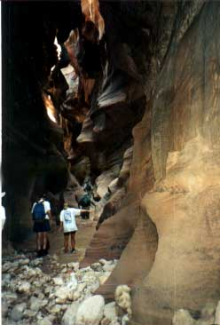
This photo shows the couple that was hiking the opposite direction from us and had missed the Middle Trail exit. At this point they’ve turned around and are hiking with us. So, hiking from Wire Pass, this is what the canyon looks like not too far from Middle Trail. Note how high the canyon walls are.
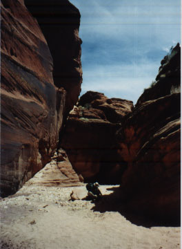
I think this photo was taken from the bottom of the Middle Trail entry/exit , facing the direction we came from (Wire Pass). Someone (Sam?) is sitting in the shade just left of the "cliff" below the ramp below the Moqui steps.
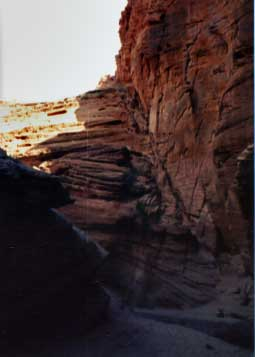
I think this is the Middle Trail entry/exit as seen when hiking from White House Ruins.
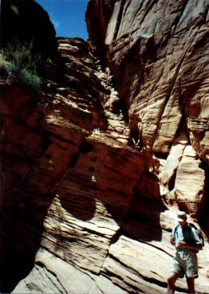
Rick is standing at the bottom of the Middle Trail entry/exit. The top of the crack is at the lower right of the box of blue sky.
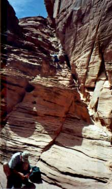
That might be Jef climbing. I think either Jef was trying the crack, or it’s not Jef (I think the lost couple got sucked into the crack), or the photo makes it look harder than it is.
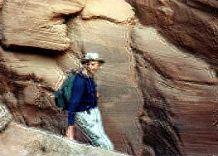
I don’t remember noticing the petroglyphs Sam is pointing at till this trip. They were at the point where it’s best to switch between climbing in the crack (at the bottom) to the ledge (in the foreground) above which are the Moqui steps. Sam looks like he’s on the step below the ledge and is heading down into the slot.
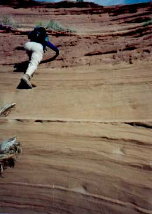
Sam is on the Moqui steps at the top of the Middle Trail entry/exit.
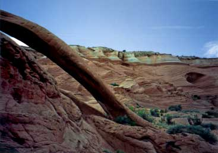
After we got to the top, we hiked to Cobra Arch. Perhaps the scenery in the background of this photo might help you when you know you’re close.
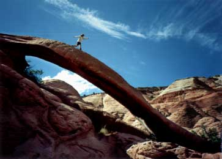
That’s Jef at Cobra Arch.
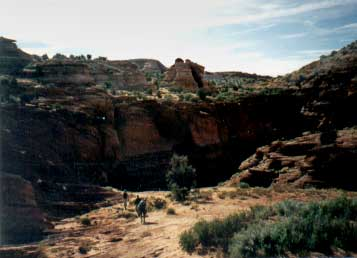
I’m not positive, but I think this is a photo of the area near the Middle Trail entry/exit at the top. We were heading back into the canyon after camping at the Middle Trail campsite, which is quite a bit higher than this. I think we went to the edge of the slot here and then turned left.
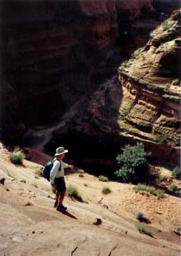
Jef is starting down the Middle Trail entry/exit. He was trying to make it look scary because I was calling it the "hazardous" entry/exit because I’d read that in a guide. I was taking plenty of photos so it couldn’t be too scary.
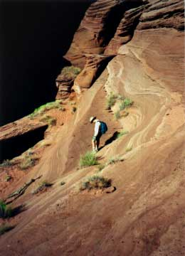
Jef is walking at the edge of a darker area. The lighter area next to that and below (to the left) is where the Moqui steps are. You can see that on this trip there was a really dead piece of wood leaning up the ramp with steps. (You can see a bit of the wood in the photo of Sam on the Moqui steps.) The red area to the left of the sandstone Moqui step area is red sand on the ledge. The ledge is the top of the "cliff" I mentioned for a previous photo.
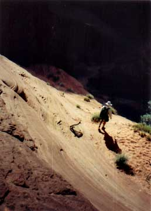
Jef is walking on the ledge now. It’s early in the morning so the inside of the canyon is totally in shade.
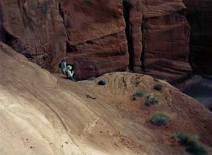
Here you can see the ramp (left edge of photo) and the ledge at the base of the ramp (with plants on it). Rick and Jef are on the easy step to convert from the ledge back to the crack.
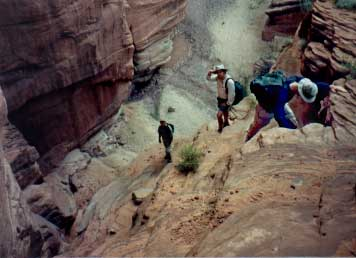
At the left at the bottom is Rick. Jef is in the middle. Sam is at the right and climbing down at Middle Trail.
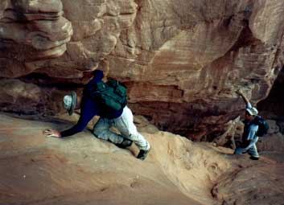
Sam is climbing down the last bit of the Middle Trail entry/exit. I think that’s Rick below and to the right.
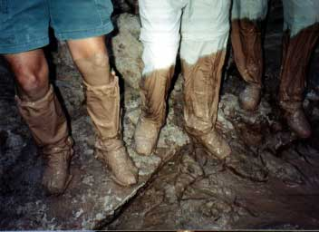
Jef, Sam, and Rick show off their shoes after walking through pancake batter mud.
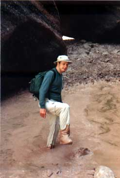
See the hole in the mud from Sam’s foot?
Generated Sat Jan 29 16:52:58 2005